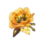
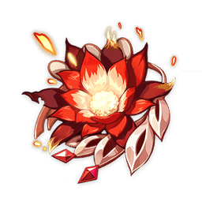

Armas
Extisten diferentes tipos de armas, Claymore, Espada, Arco y Lanza.
Cada personaje utiliza un tipo de arma, así que es necesario tener las armas con las que se cuentan y en lo que se centran.
Claymore: Los que utilizan Claymore se centran principalmente en conseguir subEstadisticas en porcentaje de ataque.
Espada: Los personajes de espada son muy versatiles, estos usuarios de espada son principalmete en ataque pero también realizar reacciones elementales con sus ataques, por lo que nos podemos centrar en seleccionar armas con ataque y maestría elemental.
Arco: La mayoría de personajes de arco se centran en hacer ataques cargados y reacciones elementales con las habilidades, así que podemos equipar arcos con ataque y maestría elemental o recarga de energía para utilizar las habilidades.
Lanza: Lo usuarios de estas armas están divididos, por una parte están Xiangling, Zhongli y HuTao que se pueden centrar en armarlos como support poniendoles ataque y sub estats que mejoren sus habilidades, por ejemplo vida o maestría elemental.
Por otro lado están los personajes como Xiao que son DPS y tienen que centrarse en hacer solo daño
Artefactos
Hay diferentes sets de artefactos en el juego, cada uno de ellos es diferente y le van mejor o peor a unos personajes, así que a continuación voy a dar una explicación de algunos sets.
- Flor: HP
- Pluma: ATK
- Reloj de arena: ATK / ATK% / DEF / DEF% / HP / HP% / Energy Recharge / Elemental Mastery
- Cáliz: ATK% / DEF% / HP% / Elemental Mastery, Elemental DMG% (Electro, Hydro, etc.)
- Casco: ATK% / DEF% / HP% / CRIT Chance / CRIT DMG / Elemental Mastery / Healing Bonus
| Artefacto | Bono de 2 piezas | Bono de 4 piezas |
|---|---|---|
|
Aventurero |
Max HP aumentado en 1,000. |
Abrir el cofre regenera un 30% de HP máximo durante 5 segundos. |
|

Petra Arcaica |
Gana un 15% de bonificación de Geo DMG. |
Al obtener un fragmento elemental creado a través de una reacción de cristalización, todos los miembros del grupo obtienen una bonificación de 35% de DAÑO para ese elemento en particular durante 10 segundos. Solo se puede obtener una forma de Bono de DAÑO Elemental de esta manera a la vez. |
|
Berserker |
Tasa CRIT + 12% |
Cuando HP está por debajo del 70%, la tasa CRIT aumenta en un 24% adicional. |
|
Final de Gladiador |
ATQ + 18% |
Si el portador de este conjunto de artefactos usa una Espada, Claymore o Arma de asta, aumenta su DAÑO de Ataque Normal en un 35%. |
|

Bruja Carmesí |
Gana un 15% de bonificación de Pyro DMG. |
Aumenta el DAÑO sobrecargado y ardiente en un 40%. Aumenta Vaporizar y Derretir DAÑO en un 15%. El uso de una habilidad elemental aumenta los efectos del conjunto de 2 piezas en un 50% durante 10 segundos. Máximo 3 pilas. |
Reacciones Elementales
En los combates de Genshin Impact los 7 poderes elementales tienen una presencia muy importante. Cada personaje domina un tipo de elemento y nosotros podemos combinar varios de manera que se den como resultado reacciones y combos muy útiles para vencer a los enemigos.
Si quieres conseguir buenos ataques con tu build de personajes tienes que consierar lo siguiente
- Anemo: es el elemento del viento.
- Cryo: es el elemento del hielo.
- Dendro: es el elemento de la naturaleza.
- Electro: es el elemento del relámpago.
- Geo: es el elemento de la tierra
- Hydro: es el elemento del agua.
- Pyro: es el elemento del fuego.
Por poner un ejemplo para entenderlo; si mojas a un enemigo y luego lo electrocutas, este sufrirá mucho daño. Es un gran ataque combinado. A su vez si atacas con el elemento Pyro a un enemigo de hielo, este se verá muy afectado. Todas estas reacciones naturales y combos te darán ventaja en combate y por ello es importante conocerlas.
A continuación te vamos a mostrar una imagen de Reacciones elementales y combos que existen en Genshin Impact, podrás ver cuál es el nombre de la reacción y con qué tipo de poderes se crea.
Videos
Algunos videos sobre builds de personajes que podían ser de ayuda
|
Build de Yanfei |
Build de Razor |
|
Build de Zhongli |
Build de Ganyu |